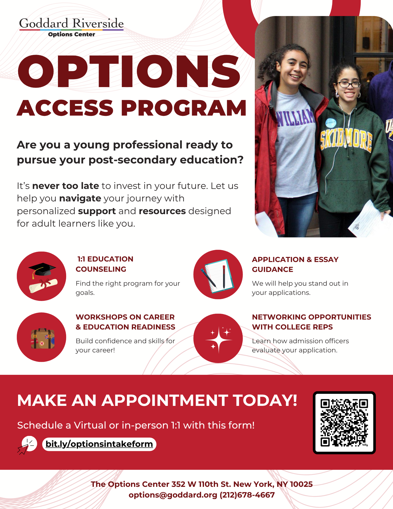
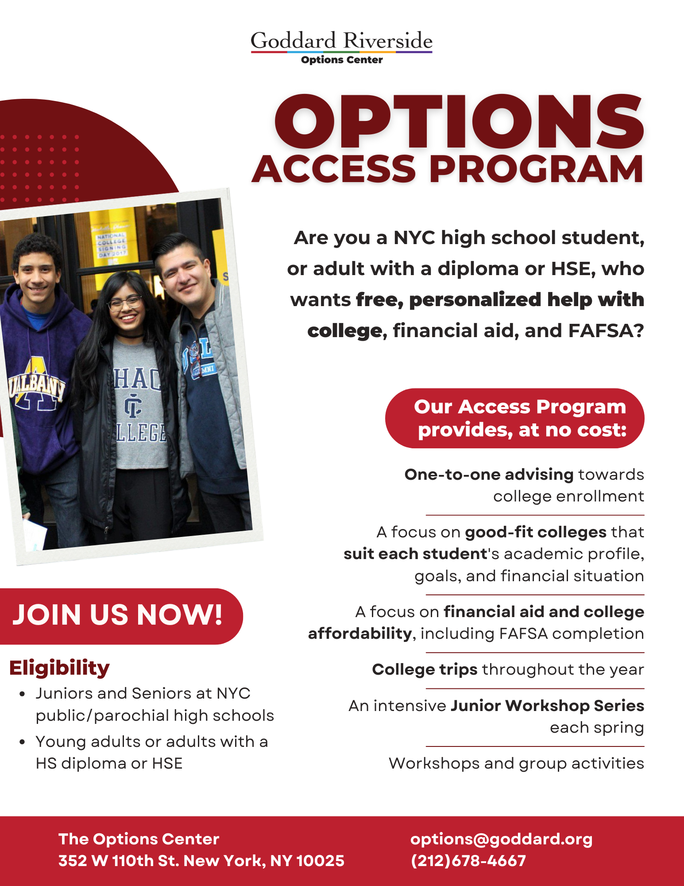
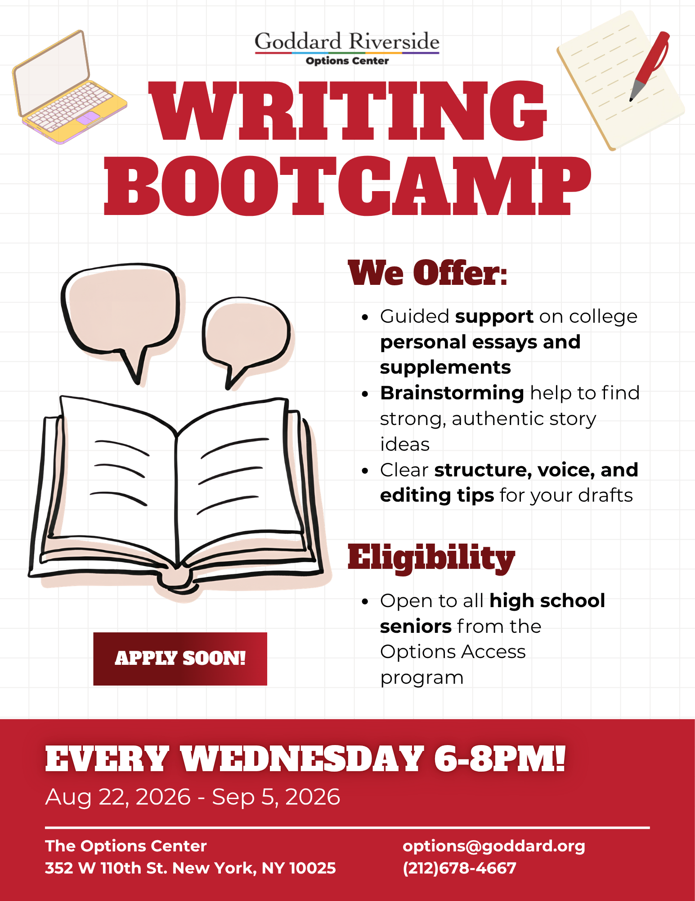

Branding and Program Marketing - Goddard Riverside
Objective: Give Goddard Riverside's college access programs a clearer, more consistent visual brand.
What I did: Defined a burgundy + Montserrat branding system and applied it across flyers and digital assets, focusing on alignment, hierarchy, and spacing.
Results: Recent campaigns have consistently driven strong engagements, with the latest SAT prep flyer bringing in sign-ups from about 75% of the active cohort.


